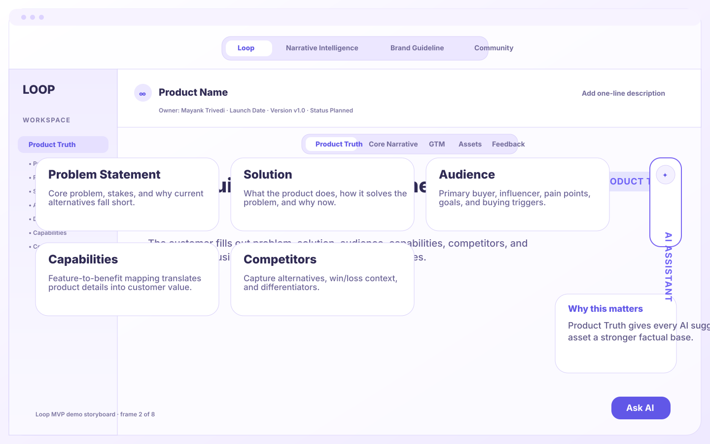
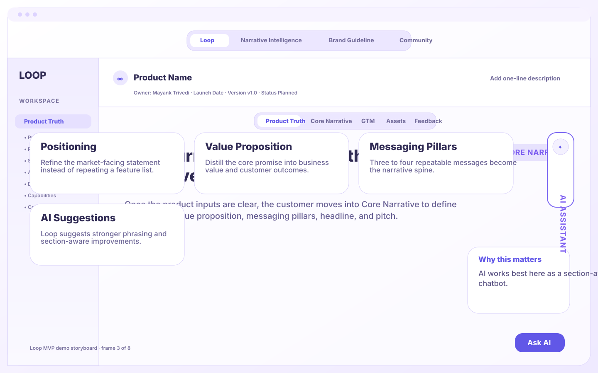
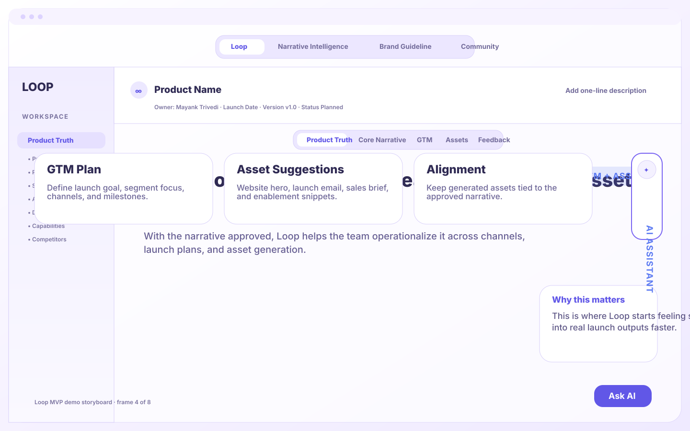
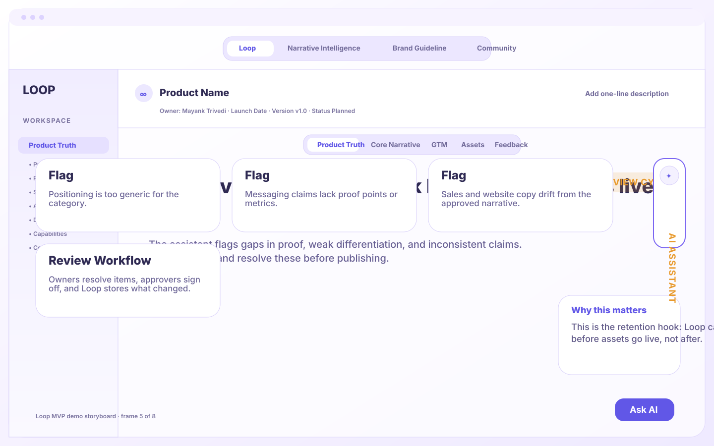
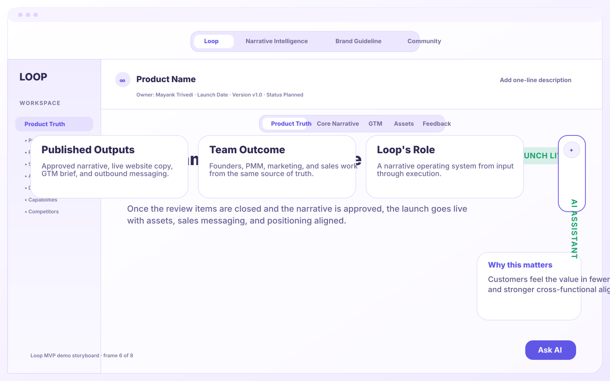
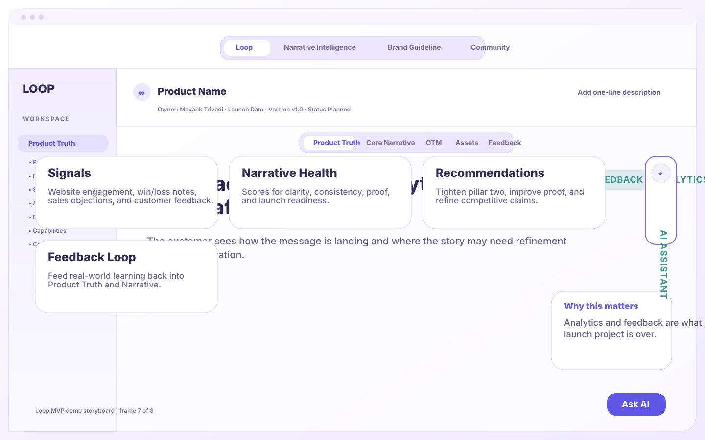
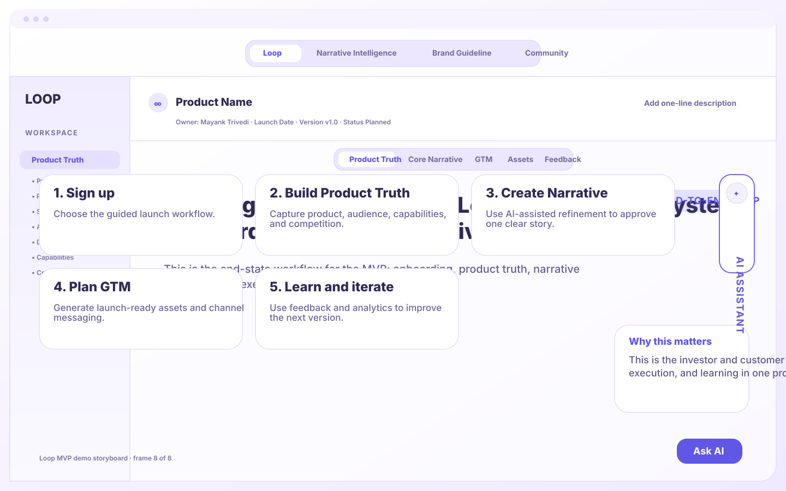

Loop reduces blank-page anxiety with a guided setup instead of dropping the user into a giant strategy canvas.
A downloadable visual walkthrough from user signup to launch and feedback. Open the preview for autoplay, or review each frame below.
Loop reduces blank-page anxiety with a guided setup instead of dropping the user into a giant strategy canvas.

Product Truth gives every AI suggestion, narrative draft, and launch asset a stronger factual base.

AI works best here as a section-aware narrative assistant, not a generic chatbot.

This is where Loop starts feeling sellable: one approved story turns into real launch outputs faster.

This is the retention hook: Loop catches narrative drift and launch risk before assets go live, not after.

Customers feel the value in fewer review loops, faster launch readiness, and stronger cross-functional alignment.

Analytics and feedback are what keep Loop useful after the initial launch project is over.

This is the investor and customer story: Loop connects strategy, execution, and learning in one product.